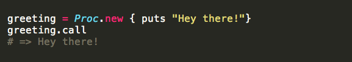

If you've been learning Ruby, you've probably come across blocks, procs, and lambdas. Do you know what they are? Do you know how they're used? Oh, you don't? Well, read on.
Blocks
Blocks are basically a way of grouping code. To get more specific, a block is a piece of code that you supply as part of a method call, which can then be executed from the method. Blocks can be optional. Methods that accept blocks transfer control from the calling method to the block and back again. Using a block to define the task you want the method to do simplifies that task. The code block is part of the method's syntax; it is not an argument.
Blocks are defined using either do/end statements or curly braces ({ }). A block may take arguments, though they are not required. Block arguments are used at the beginning of the block and are surrounded by pipe characters (| |).
It's been said over and over again, that everything in Ruby is an object. It turns out, that's not entirely true. Blocks are not objects. So, they can't be saved to variables nor do they have all of the abilities of real objects. Enter procs.
Procs
Procs are self-contained pieces of code that can be created, saved, and passed in as method arguments. Think of a proc as a saved block; you can name a block and turn it into a proc. To create a proc, call Proc.new and pass in the block that you want saved.

This proc can now be passed to a method in place of a block:
Procs have two major advantages over blocks. First, they are objects with full object abilities. Second, procs help keep code DRY (Don't Repeat Yourself). With a proc, you write the code once and can call it as often as you'd like; unlike a block, where you have to write out the code each time you need it. Oh, and one more bonus with a proc...you can call a proc with a method (as in the above example) or by using Ruby's built-in call method:
Lambdas
Just like procs, lambdas are objects. Lambdas are defined in this way:
Looks just about the same as a proc, doesn't it? You can use lambdas in the same situations as you'd use procs. There are, however, three key differences that set lambdas apart from procs. First, lambdas need to be created explicitly while procs do not. Second, they differ in how they deal with the return keyword. When a lambda returns, control gets passed back to the calling method. When a proc returns, it does not go back to the calling method. Third, a lambda, unlike a proc, pays close attention to the number of arguments passed to it. So if you pass a lambda the wrong number of arguments, an error will be thrown. In the same situation, a proc would just ignore the unexpected arguments.